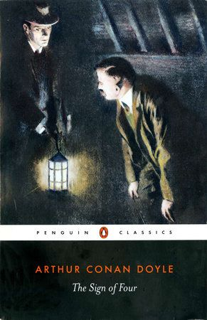
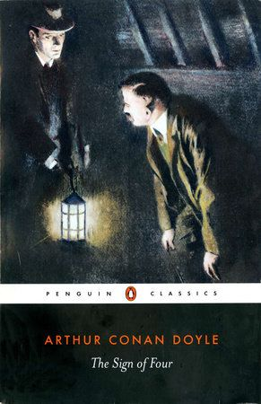
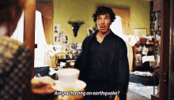
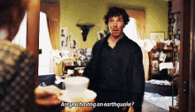

Sherlock Holmes
Sherlock Holmes is a consulting detective, renowned for his exceptional intellect, keen powers of observation, and unparalleled skills in deductive reasoning. Living at 221B Baker Street in London, Holmes takes on cases that baffle Scotland Yard and solves them using logic and scientific methods. Known for his eccentric habits, Holmes often uses disguises, experiments with chemistry, and plays the violin during moments of introspection. His famous catchphrase, though often misattributed, summarizes his method: "When you have eliminated the impossible, whatever remains, however improbable, must be the truth."
Holmes represents the pinnacle of rationality and forensic expertise in a world often filled with chaos and mystery.
Dr. John Watson
Dr. John H. Watson, a retired army doctor who served in Afghanistan, is Sherlock Holmes' loyal companion, biographer, and closest friend. He provides the emotional balance to Holmes' cold logic and helps humanize the detective. As the narrator of most of the Holmes stories, Watson brings the adventures to life, allowing readers to view the mysteries through his perspective. His admiration for Holmes' genius, combined with his own practicality and compassion, makes him an indispensable part of the duo.
Watson often accompanies Holmes on his investigations, providing both moral support and a grounding influence. His role as the chronicler of Holmes' cases ensures that the detective's exploits are shared with the world.
 



.webp)
 
